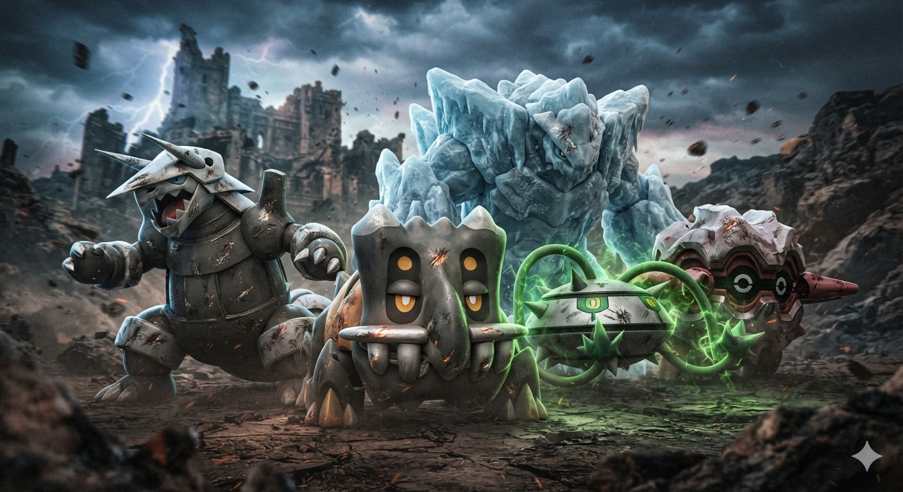
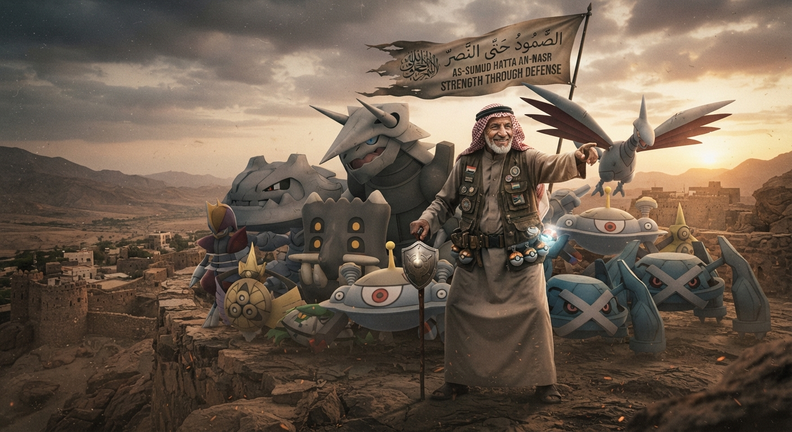
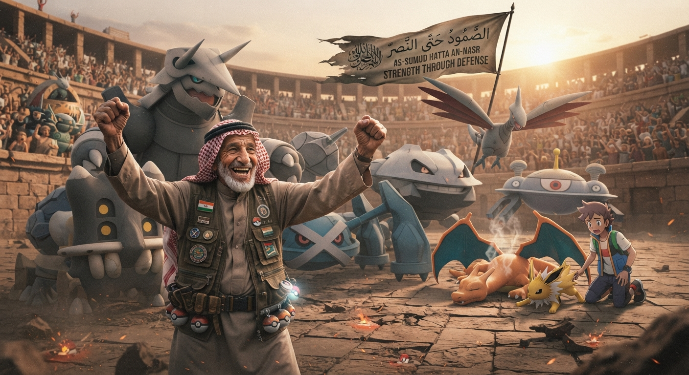

🔥El Arte de NO saber jugar🔥
Mira, la raza siempre se apendeja queriendo ser el héroe de la película: todos buscan al Charizard con ataque al máximo, al Lucario rapidísimo o al Legendario de portada para barrer al rival en un turno. Pero la verdadera maña no está en dar los trancazos más recios, sino en aguantar vara, desesperar al otro y ver cómo se autodestruye solito.
No necesitas ser un genio del competitivo ni saberte de memoria todos los EV, IV y la madre. Ser "malo" jugando Pokémon se vuelve una bendición cuando aceptas tu realidad y te vas por el camino de la maña defensiva: la vía del *stall*.

La Filosofía del Viejito Mañoso

* El aguante supera a la fuerza: Pones a un Shuckle, un Toxapex o un Blissey enfrente y te sientas a ver el mundo arder. Que el rival te aviente su mejor ataque y no te baje ni la cuarta parte de la vida es una joya.
* El veneno y el desgaste son tus mejores compas: Tu estrategia no es pegar, es existir. Un *Tóxico*, un *Drenadoras*, unas cuantas *Púas* en el campo y a tirar *Protección* o *Recuperación* cada dos turnos.
* El factor psicológico: Cuando juegas a defenderte, el verdadero daño no es a la barra de vida del rival, es a su paciencia. El vato que traía a sus seis Pokémon atacantes se empieza a desesperar, comete errores por atrabancado y termina rindiéndose nomás de ver que no te puede entrar.
A fin de cuentas, ganar dando un solo golpe crítico no tiene chiste. Lo sabroso es ganar la pelea sin haber tirado un solo ataque directo, nomás viendo cómo el veneno y la frustración hacen todo el trabajo sucio mientras tu Pokémon se cura la vida en su cara.
Harammon, no lo entenderias.
